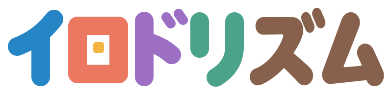

こえと タッチで ドットえを つくろう。
© 2026 SIKUMI LAB
おおきさを えらんでね。はじめてなら 3 × 3。
おてほん
すきな かたちを えらぼう。いろは かえても いいよ。
この おおきさには まだ ないよ。ほかも みてね。
いろ
さくひん
まだ さくひんが ないよ。

こえと タッチで ドットえを つくろう。
© 2026 SIKUMI LAB
おおきさを えらんでね。はじめてなら 3 × 3。
すきな かたちを えらぼう。いろは かえても いいよ。
この おおきさには まだ ないよ。ほかも みてね。
まだ さくひんが ないよ。